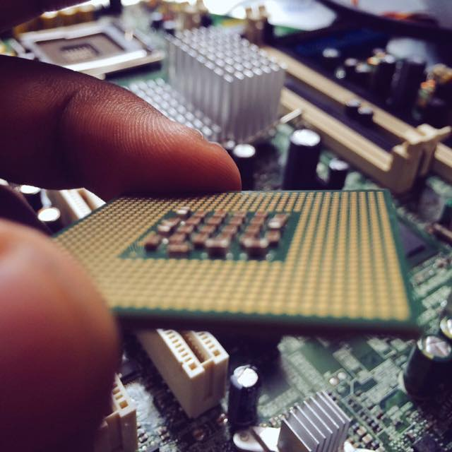

Building RESTful APIs with Go
February 10, 2021
Why Go for APIs?
Go's standard library has excellent HTTP support, and its concurrency primitives (goroutines and channels) make it perfect for I/O-bound operations like API calls.
Project Structure
- HTTP client with proper timeouts and retries
- JSON marshaling/unmarshaling for API responses
- Error handling with custom error types
- Rate limiting to respect API quotas
- Concurrent requests with goroutines
Lessons Learned
Proper error handling in Go requires discipline. Using custom error types and wrapping errors with context makes debugging much easier. Also learned about the importance of setting timeouts on HTTP clients to prevent hanging connections.
FP-Growth Algorithm for Market Basket Analysis
September 12, 2020
Frequent Pattern Mining
Market basket analysis tries to find items that are frequently purchased together. The FP-Growth algorithm does this efficiently without generating candidate itemsets.
Algorithm Overview
- Scan database to find frequent 1-itemsets
- Build FP-tree (compressed representation)
- Mine the tree recursively to find patterns
Why FP-Growth vs Apriori?
The Apriori algorithm generates candidate itemsets explicitly, which can be very expensive. FP-Growth uses a compact tree structure that only needs 2 database scans and avoids candidate generation entirely.
Implementation Details
I used a trie data structure to build the FP-tree, which made it easy to share common prefixes between transactions. The recursive mining process builds conditional pattern bases for each item.
Image Segmentation: Felzenszwalb Algorithm
May 22, 2020
Graph-Based Segmentation
The Felzenszwalb algorithm treats image segmentation as a graph partitioning problem. Each pixel is a node, and edges connect neighboring pixels with weights based on color differences.
Algorithm Steps
- Build graph where pixels are vertices
- Edge weights = color difference between pixels
- Sort edges by weight
- Use disjoint-set (union-find) to merge regions
- Merge if difference is small relative to internal variation
Why It Works
The key insight is that regions should be merged based on their internal variation, not just absolute differences. This allows the algorithm to handle varying contrast across the image.
Implementation Challenges
Efficiently implementing the disjoint-set data structure with path compression and union-by-rank was crucial for performance. Also had to handle RGB color space distances properly.
Implementing a Unix Shell in C
April 8, 2020
The Tiny Shell Project
The Tiny Shell (TSH) project required implementing a fully functional Unix shell with job control support.
Core Features Implemented
- Process creation with fork() and exec()
- Foreground and background job execution
- Signal handling (SIGCHLD, SIGINT, SIGTSTP)
- Job control commands (fg, bg, jobs)
- Built-in commands (quit, jobs, fg, bg)
Technical Deep Dive
The most challenging part was getting signal handling right. Race conditions between parent and child processes required careful use of sigprocmask() and sigsuspend(). Understanding signal semantics and async-signal-safe functions was crucial.
Key Takeaways
This project gave me a deep appreciation for how shells work and why seemingly simple operations like Ctrl+C are actually complex orchestrations of signals and process groups.
Building a CHIP-8 Emulator in C
November 15, 2019
Why Build an Emulator?
Building an emulator forces you to understand how a computer works at the most fundamental level. You need to implement the CPU, memory, display, and input systems from scratch.
Key Challenges
- Implementing the instruction set decoder
- Managing memory layout (4KB of RAM)
- Handling display rendering (64x32 monochrome)
- Implementing delay and sound timers
- Processing keyboard input
What I Learned
This project taught me about opcode decoding, bitwise operations, memory-mapped I/O, and the importance of timing in emulation. Understanding how CHIP-8 works made it easier to understand more complex systems like the Game Boy or NES.
My Journey into Computer Architecture
June 18, 2018
The Pentium 4 Era
This Pentium 4 was my first deep dive into understanding how CPUs actually work. It features the NetBurst microarchitecture with a very deep pipeline (20+ stages).
What Makes CPUs Fascinating
- Instruction pipelining and superscalar execution
- Branch prediction and speculative execution
- Cache hierarchies (L1, L2, L3)
- Out-of-order execution
- SIMD instructions (SSE, AVX)
From Assembly to Hardware
Learning x86 assembly helped me understand the instruction set architecture (ISA). But the real magic happens in the microarchitecture - how the CPU actually executes those instructions using pipelining, out-of-order execution, and branch prediction.
Modern Developments
Today's processors are incredibly complex, with dozens of cores, huge caches, and advanced features like hyperthreading. Understanding these fundamentals helps me write better code that takes advantage of CPU features.
